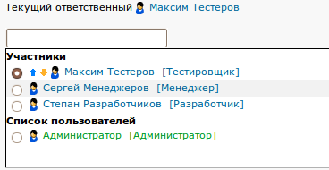

|
<< Click to Display Table of Contents >> Navigation: DocumentationEng > Administrator's Guide > Who is assignee and why is he required? |
In TrackStudio, “Assignee” is the person who is not just given a task for execution but he is the person, who is responsible for that particular task. Absence of assignee in the task in that case means irresponsibility and can lead to complete chaos. If it is not possible to define, who is responsible for the task at a given time, it is recommended to hand over the responsibility either to the leader, or to a particularly mentioned user.

There are two traditional approaches for delegation of tasks.
The first approach is when the tasks without assignees are hanging in a common heap, and the potential executives examine this heap and select something better for them. Or they don’t chose anything at all, and then the tasks may hang in the heap for years together, and then someone is fired, or may be all are fired.
Second approach is when assignee (project manager or leader) is delegated to the tasks immediately at the time of their creation and he himself distributes the tasks in the team. Undistributed tasks “hang” over him and in case if anything goes wrong he will have to report to the management.
You have to decide, which approach you want to follow.
Besides delegating task to one user, sometimes there is requirement to assign it to some group of users. For example, in case if there is a team of testers, and the task is primitive and it doesn’t make sense to chose a person who will be responsible for that, or when it is required that this test is performed by each member of the group, or in case of shift duties of support group, when the task is to be performed by the person, who is currently present at the work place.
TrackStudio also allows you to assign the task to a group, although generally speaking no such group by itself exists in TrackStudio. But there are roles (“developer”, “tester”, “maintenance engineer” etc), which are assigned to the users, and there are projects, in which the users are granted access with these roles. Intersection of role and project leads to group. In this way, a user may be a member of one group in one project and in another project he may be in some other group (or groups).
Read in detail about how to organize the users into groups.
If the task is assigned to a group, each of the users of this group can see it in the list “My Tasks”, if that list is filtered with the conditionAssignee – Me.